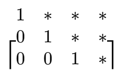
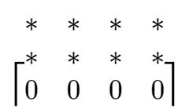
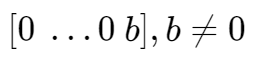

介绍
基础行操作 | ELEMENTARY ROW OPERATIONS
- Replacement Replace one row by the sum of itself and a multiple of another row.
- Interchange Interchange two rows.
- Scaling Multiply all entries in a row by a nonzero constant.
- 以一行与另一行的和来替换一行。
- 交换两行。
- 将一行乘以一个非零常数。
方程组判别
对于一个三元方程组的解，有如下情况
- 有唯一解：方程组可以转化为下面形式的矩阵

- 有无穷个解：方程组对应的矩阵在简化后有一行全为零

- 无解：方程组对应的矩阵在简化后出现形如  的列。